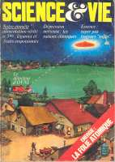

Couverture du Science & Vie d'avrilScience & Vie fait sa couverture sur les soucoupes volantes et publie un article sur un détecteur de
soucoupes, et indique que David R. Saunders a répertorié dans son fichier près de 35000
témoignages d'observation d'ovnis "Le détecteur de 'soucoupes volantes", Science & Vie n° 679, p. 64.
Décès de Georges Pompidou.
Apparition supposée de la Sainte
Vierge à Bayside (New York), qui aurait déclaré : Dieu le Père trouve nécessaire
que vous informiez les hommes de science que les véhicules connus sous le nom d'OVNIs sont envoyés par l'enfer pour
tromper et déconcerter l'humanité en la faisant rechercher un autre monde, celui de ces "extraterrestres", qui
n'existe pas.
La nuit, dans la région de Charleroi (Belgique), un son modulé
parfois insoutenable se fait entendre en une vingtaine de lieux différents pendant . Plusieurs
personnes relèvent aussi une lumière insolite, quand d'autres décrivent le plus souvent un objet en forme de disque,
avançant régulièrement à hauteur d'arbre. Des sensations physiologiques (maux de tête, fourmillements, etc.), une
panne de téléviseur, un effet sur la végétation seront aussi notés.
Observation à Hawaï le 25 avril
Observation de Tsutomu Nakayama à Kapiolani Park (Hawaï).
{kind=link}
{kind=link}